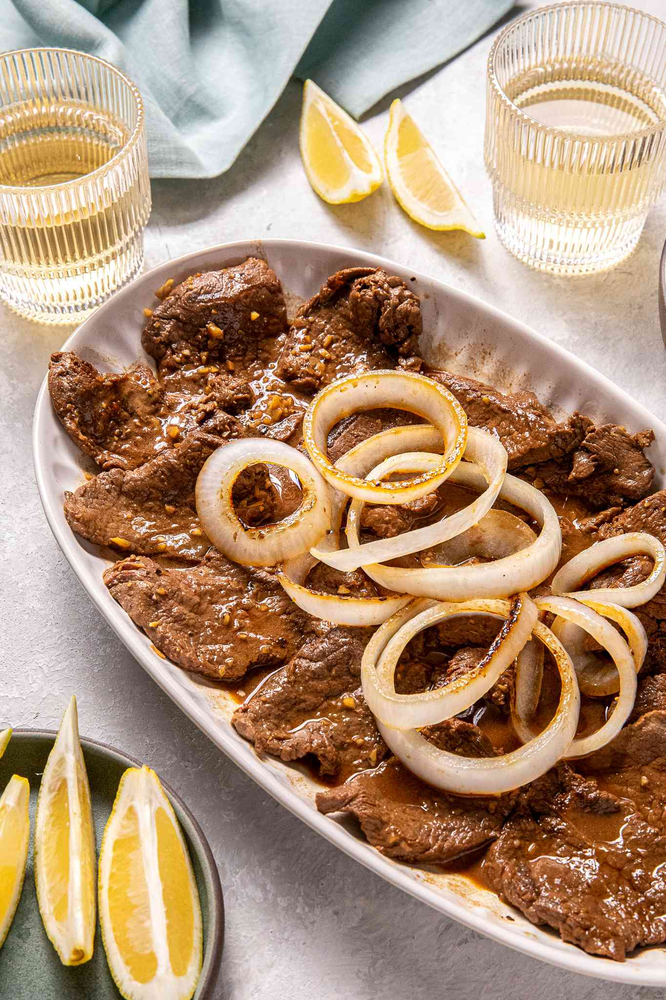

Bistec Tagalog

Description
Kawaling Pinoy Recipe
Filipino-style beef steak dish usually served with rice. Thin sirloin
slices braised in a mixture of citrus, soy sauce, onions, and garlic.
Ingredients
- 2 pounds Beef sirloin
- 2 lemons OR 4 calamansi
- Quarter cup of soy sauce
- 1 onion head
- 1 garlic head
- Quarter teaspoon of pepper
- 3 tablespoons of canola oil
- 1 cup of water
Steps
- Combine the beef, lemon juice, soy sauce, sliced onions, garlic,
and pepper in a bowl. Massage the meat in the marinade and let
marinate for 30 minutes.
- Remove the meat, onions, and garlic then squeeze and save up
the excess liquid.
- Heat oil in a pan at high heat. Add beef and cook for around 4
minutes per side until lightly browned. Save released juices.
- In the same pan, add onions and garlic. Stir regularly until
softened, then return beef to pan.
- Add the marinade and meat juices back to the pan. Add water and
build to a boil.
- Cover the pan, lower the heat, simmer for 40-50 minutes until
meat is tender.
- Garnish the final dish with fresh onion rings.